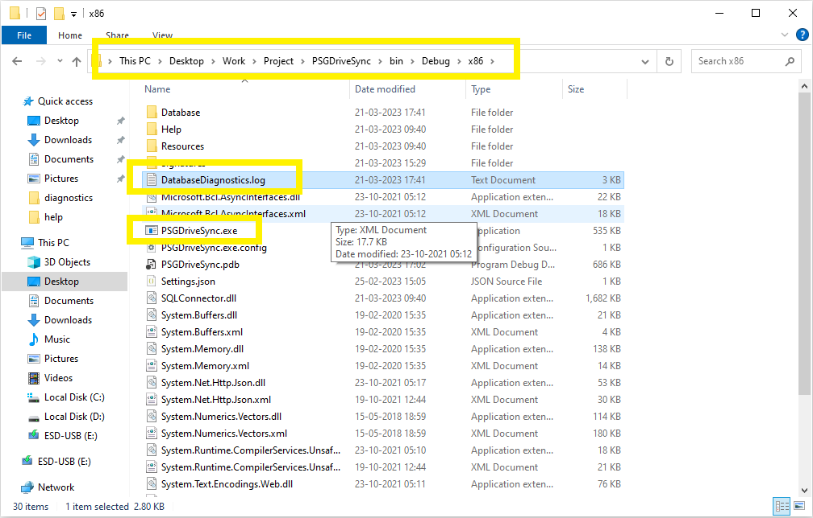

1
On the loading page, you can click on the "System Diagnostics" tab first.

2
Click on the option for "Diagnose Database Connection".
3
You can reach the same option from the application main window as well by clicking on the "Help" tab then "System Diagnostics" and "Diagnose Database Connection".
4
On the next window saying "Select Database File to Diagnose", Select the application's database file "Database.db" on your computer and then click on "Open".
5
Click "Ok" on the results window and go to the application directory where the application executable "PSGDriveSync.exe" file exists. In that directory or folder you should see a file by the name "DatabaseDiagnostics.log". Please go ahead and open that file in your favorite text editor program.

6
The content of the log file should show a bunch of Database commands along with the results associated with running those commands. All the commands should be saying "PASS" to indicate that there is no problem connecting to the database however if any one of them fail and give out an error message then you could try the following to resolve the problem
- Make sure that PSGDriveSync is not being blocked by an Anti Virus software application.
-
Database file's read/write permissions are set correctly where most default system applications are able to access and read the file.
More information can be found on
Dell's Website and Microsoft's Website